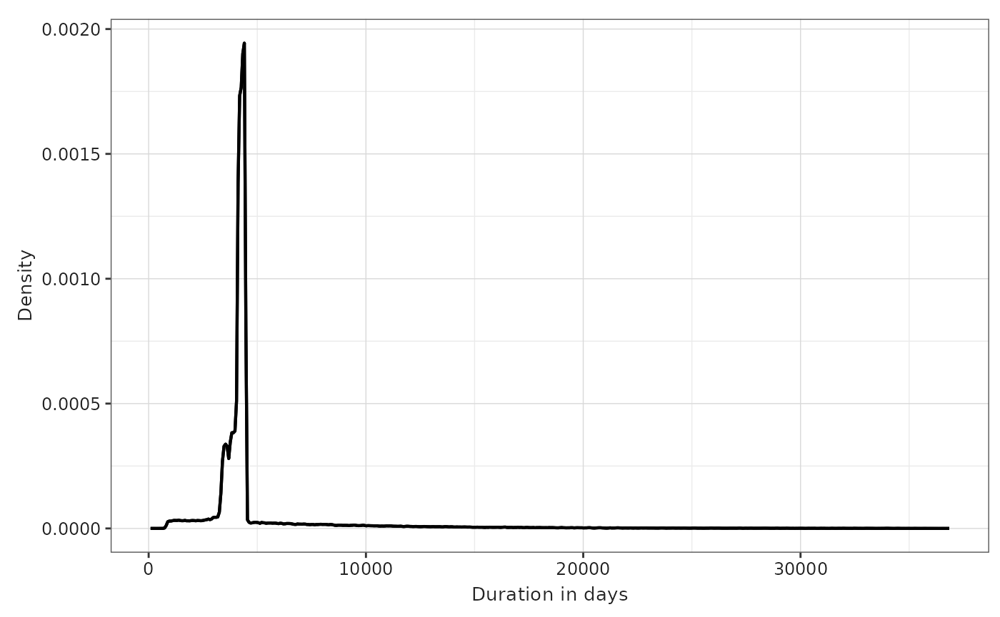
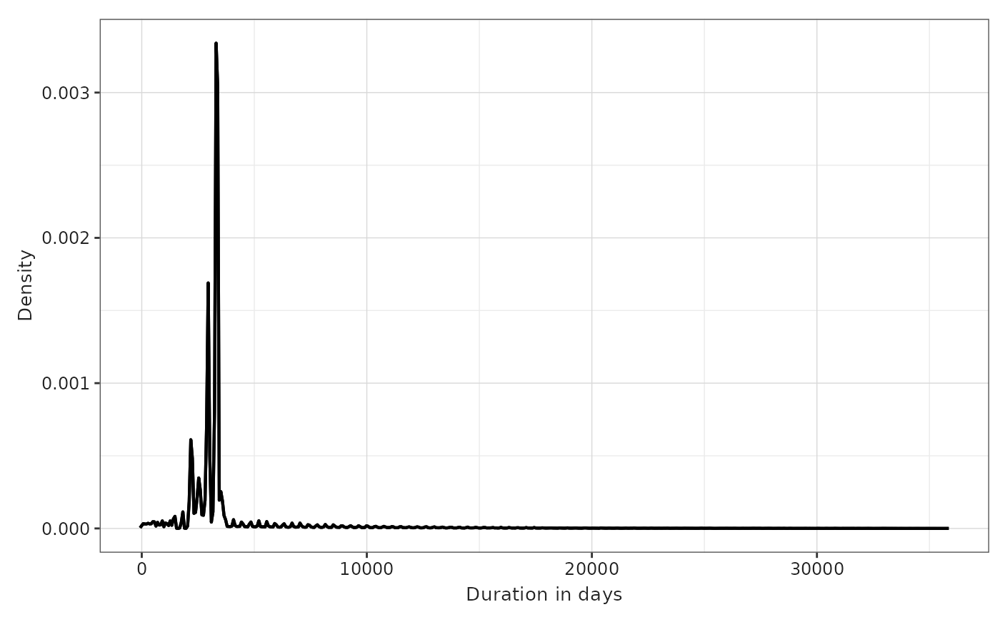
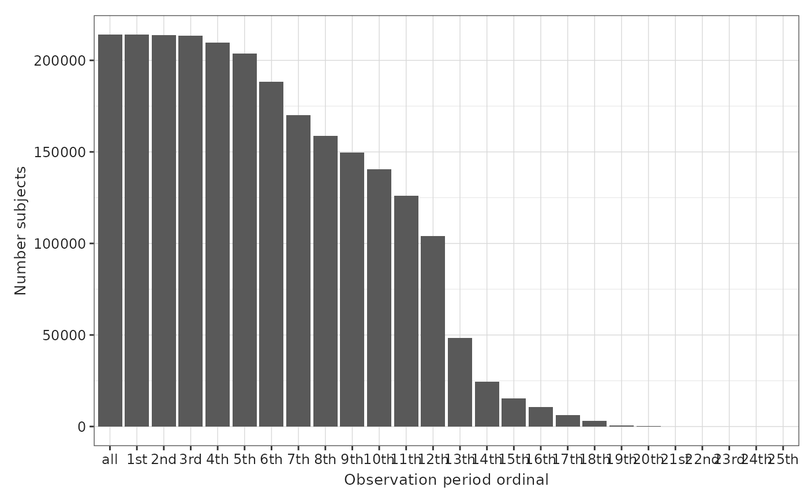
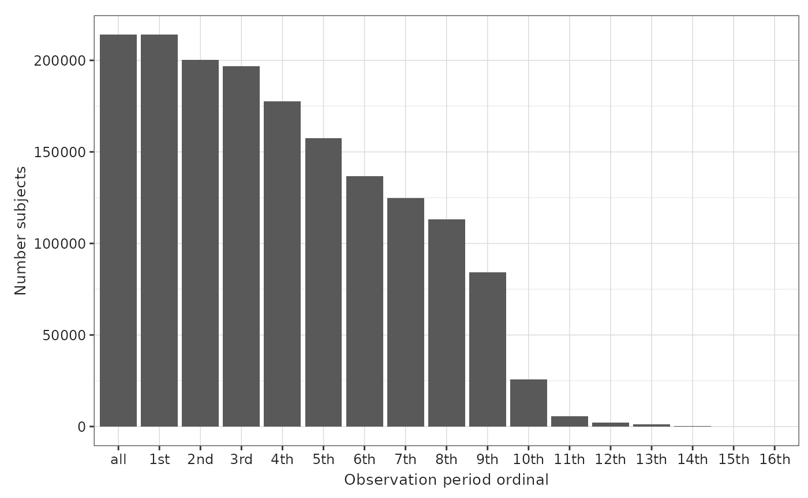
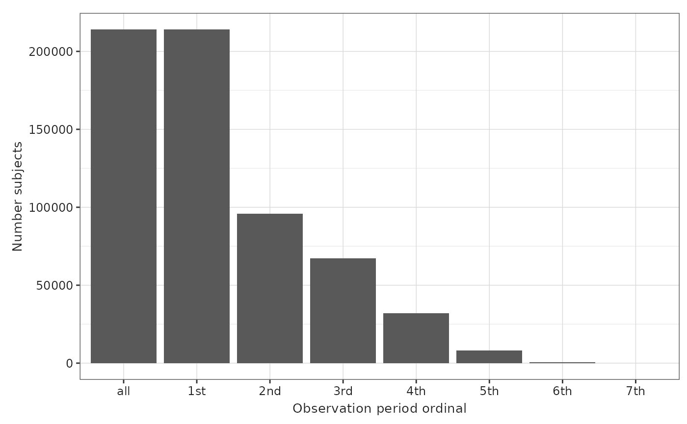
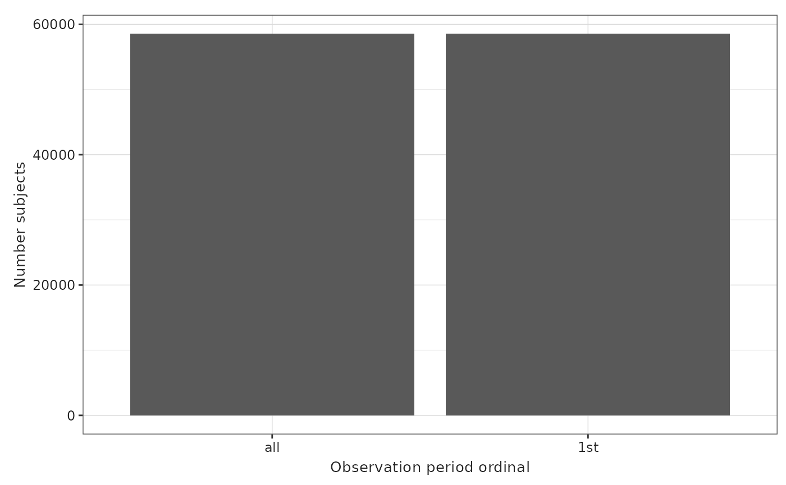
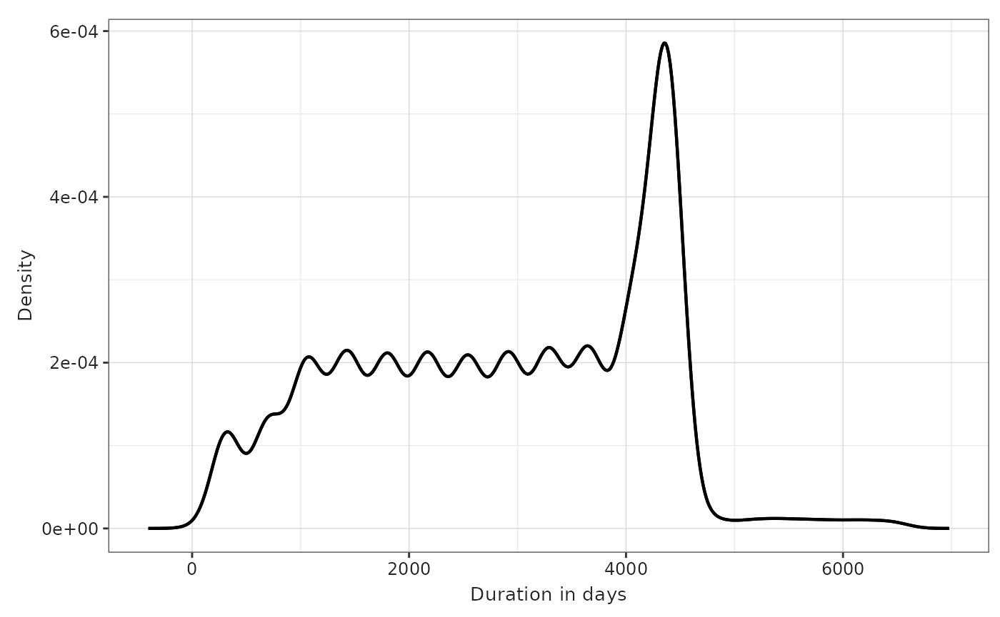

Generating the Observation Period Table
Source:vignettes/generateObservationPeriod.Rmd
generateObservationPeriod.Rmd#> ℹ `EUNOMIA_DATA_FOLDER` set to: /tmp/Rtmpe6Z6Tu.
#>
#> Download completed!
library(dplyr)
#>
#> Attaching package: 'dplyr'
#> The following objects are masked from 'package:stats':
#>
#> filter, lag
#> The following objects are masked from 'package:base':
#>
#> intersect, setdiff, setequal, union
library(DBI)
library(duckdb)
library(OmopConstructor)
library(DrugUtilisation)
library(IncidencePrevalence)
library(CodelistGenerator)
library(CDMConnector)
# Connect to Eunomia database
con <- dbConnect(duckdb(), eunomiaDir(datasetName = "synthea-covid19-200k"))
#> Downloading synthea-covid19-200k
#>
#> Download completed!
#> Creating CDM database /tmp/Rtmpe6Z6Tu/synthea-covid19-200k_5.3.zip
#> ■■■■ 10% | ETA: 35s
#> ■■■■■■■■■■■■■■■■■■■■ 63% | ETA: 7s
#> ■■■■■■■■■■■■■■■■■■■■■■■ 73% | ETA: 6s
#> ■■■■■■■■■■■■■■■■■■■■■■■■■ 80% | ETA: 5s
cdm <- cdmFromCon(
con = con, cdmSchema = "main", writeSchema = "main", cdmName = "Eunomia"
)
codelist <- getDrugIngredientCodes(
cdm = cdm,
name = c("acetaminophen"),
nameStyle = "{concept_name}"
)
cdm <- generateDrugUtilisationCohortSet(
cdm = cdm, conceptSet = codelist, name = "outcome"
)
#> ℹ Subsetting drug_exposure table
#> ℹ Checking whether any record needs to be dropped.
#> ℹ Collapsing overlaping records.
#> ℹ Collapsing records with gapEra = 1 days.
cdm
#>
#> ── # OMOP CDM reference (duckdb) of Eunomia ────────────────────────────────────
#> • omop tables: attribute_definition, care_site, cdm_source, cohort_definition,
#> concept, concept_ancestor, concept_class, concept_relationship,
#> concept_synonym, condition_era, condition_occurrence, cost, death,
#> device_exposure, domain, dose_era, drug_era, drug_exposure, drug_strength,
#> fact_relationship, location, measurement, metadata, note, note_nlp,
#> observation, observation_period, payer_plan_period, person,
#> procedure_occurrence, provider, relationship, source_to_concept_map, specimen,
#> visit_detail, visit_occurrence, vocabulary
#> • cohort tables: outcome
#> • achilles tables: -
#> • other tables: -First record to end of database
The default settings for generateObservationPeriod() is
from first record to end of database. This means that each individual
has one observation period, that spans from when they first enter the
database up to the end of the data. This setting results in the longest
observation period. it is not advised to use this in a database where
deaths or other exits from the database aren’t well recorded.
cdm <- generateObservationPeriod(
cdm,
collapseEra = Inf,
persistenceWindow = Inf
)
OmopSketch::plotObservationPeriod(OmopSketch::summariseObservationPeriod(cdm$observation_period),
plotType = "densityplot",
variableName = "Duration in days")
Min to Max Observation Period
Another option is for an observation period to span from the first record to the last record observed for each person.
This option can cause problems towards the end of the database.
cdm <- generateObservationPeriod(
cdm,
collapseEra = Inf,
persistenceWindow = 0
)
OmopSketch::plotObservationPeriod(OmopSketch::summariseObservationPeriod(cdm$observation_period),
plotType = "densityplot",
variableName = "Duration in days")
Under observation during visits only
Another option is to have people only be under observation during primary care or hospital visits. This would result in most people having multiple observation periods, with each period duration being relatively short.
This is not a good option to use if you want to calculate incidence or prevalence, as it will result in an unreliable denominator.
cdm <- generateObservationPeriod(
cdm,
collapseEra = 0,
persistenceWindow = 0,
recordsFrom = c("visit_occurrence")
)
p <- OmopSketch::plotObservationPeriod(OmopSketch::summariseObservationPeriod(cdm$observation_period))
p$data <- p$data |>
dplyr::mutate(observation_period_order = dplyr::if_else(.data$observation_period_ordinal == "all", 0, as.numeric(gsub("\\D", "", .data$observation_period_ordinal))),
observation_period_ordinal = factor(
.data$observation_period_ordinal,
levels = .data$observation_period_ordinal[order(observation_period_order)]
))
p
Censor after 180 days of no records
cdm <- generateObservationPeriod(
cdm,
collapseEra = 180,
persistenceWindow = 180
)
p <- OmopSketch::plotObservationPeriod(OmopSketch::summariseObservationPeriod(cdm$observation_period))
p$data <- p$data |>
dplyr::mutate(observation_period_order = dplyr::if_else(.data$observation_period_ordinal == "all", 0, as.numeric(gsub("\\D", "", .data$observation_period_ordinal))),
observation_period_ordinal = factor(
.data$observation_period_ordinal,
levels = .data$observation_period_ordinal[order(observation_period_order)]
))Censor after 365 days of no records
cdm <- generateObservationPeriod(
cdm,
collapseEra = 365,
persistenceWindow = 365
)
p <- OmopSketch::plotObservationPeriod(OmopSketch::summariseObservationPeriod(cdm$observation_period))
p$data <- p$data |>
dplyr::mutate(observation_period_order = dplyr::if_else(.data$observation_period_ordinal == "all", 0, as.numeric(gsub("\\D", "", .data$observation_period_ordinal))),
observation_period_ordinal = factor(
.data$observation_period_ordinal,
levels = .data$observation_period_ordinal[order(observation_period_order)]
))
p ## Censor after 545 days of no records
cdm <- generateObservationPeriod(
cdm,
collapseEra = 545,
persistenceWindow = 545
)
p <- OmopSketch::plotObservationPeriod(OmopSketch::summariseObservationPeriod(cdm$observation_period))
p$data <- p$data |>
dplyr::mutate(observation_period_order = dplyr::if_else(.data$observation_period_ordinal == "all", 0, as.numeric(gsub("\\D", "", .data$observation_period_ordinal))),
observation_period_ordinal = factor(
.data$observation_period_ordinal,
levels = .data$observation_period_ordinal[order(observation_period_order)]
))
p ## Paediatric Databases
The function generateObservationPeriod() contains an
argument called censorAge, which allows users to define the
age at which a patient is no longer in observation. For example, for
paediatric databases you would not expect patients to be under
observation once they turn 18.
cdm <- generateObservationPeriod(
cdm,
collapseEra = Inf,
persistenceWindow = Inf,
censorAge = 18L
)
OmopSketch::plotObservationPeriod(OmopSketch::summariseObservationPeriod(cdm$observation_period))
OmopSketch::plotObservationPeriod(OmopSketch::summariseObservationPeriod(cdm$observation_period),
plotType = "densityplot",
variableName = "Duration in days")